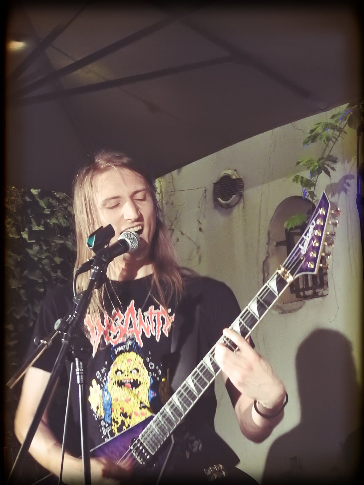

Comment vous êtes-vous retrouvés ici ?
Bonjour, je suis Raphaël, et il se trouve que vous êtes tombés sur mon site perso :)

À propos de moi
Je suis actuellement en train de faire un doctorat en informatique dans l'équipe ICPS du laboratoire ICube.
Je travaille sur les optimizations de compilateurs et les transformations de code dynamiques spéculatives, plus précisément sur le sujet du multi-versioning. C'est à dire, le fait de sélectionner la version la plus performante d'un programme donné dans un contexte d'exécution donné.
J'aime les ordinateurs, la musique (particulièrement le métal), le karaoké et plein d'autres trucs !
Musique
Je suis guitariste dans un petit groupe de thrash metal français qui s'appelle Kernel Panik (je suis très fier de ce mot). Vous pouvez trouver notre musique ici et nous suivre sur Instagram ici.
C'est du crossover / thrash, alors ayez une bière près de vous et soyez prêts à sauter dans le pogo !
Blog
Vous pouvez trouver mon blog ici, j'écris sur n'importe quel sujet que je trouve intéressant à un moment donné (en supposant que j'en ai la motivation).
Jeux
J'ai participé à quelques game jams. Vous pouvez jouer aux jeux sur ma page itch.io.
- The Bloody Raise est un jeu fait à l'occasion de la SCREAM JAM 2025. Le jeu est conçu pour que vous y jouiez plusieurs fois de suite pour découvrir toute l'histoire.
- The Funny Place est un jeu fait à l'occasion de la Global Game Jam 2024. C'est une sorte de god game où vous devez rendre les gens heureux (ou tristes) en utilisant les outils à votre disposition. C'était à l'origine pensé comme un jeu de puzzles où vous auriez dû équilibrer l'utilisation de vos outils pour rendre les gens heureux ou tristes dans le but d'augmenter le bonheur général du mieux que vous pouvez. Nous n'avons pas eu le temps de tout finir, donc le jeu est plutôt une sorte de démo technique, mais les éléments essentiels sont là.
Contact
Vous pouvez me contacter sur LinkedIn (je ne suis pas sûr que ce soit une bonne idée de mettre mon adresse e-mail en public).